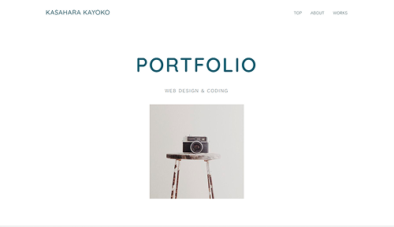

WORKS
制作物

- 概要
- 転職活動の為に作成したポートフォリオサイトを作成
- 使用ツール
- Figma / Visual Studio Code
- 制作期間
- 0.5か月(2026年7月中旬〜7月下旬)
デザイン 3日 / コーディング 8日
- 対応範囲
- カンプ制作 / 構成 / レイアウト / 画像補正 / デザイン / コーディング /
- 現状
-
- 転職活動に使用する際のポートフォリオサイトがなかったため、
デザインからコーディングまでを一人で作成する必要があった。
- 転職活動に使用する際のポートフォリオサイトがなかったため、
- シンプルで分かりやすいポートフォリオサイトを作る
- 学校の授業で学んだことをアウトプットしていく
- 併せてレスポンシブ対応もできるようにする
- 感想
-
- 全体の装飾は控えめにし、余白を活かしたレイアウトにした。
- シンプルでありながらも、アクセントにフォントや色に変化をつけてみた。